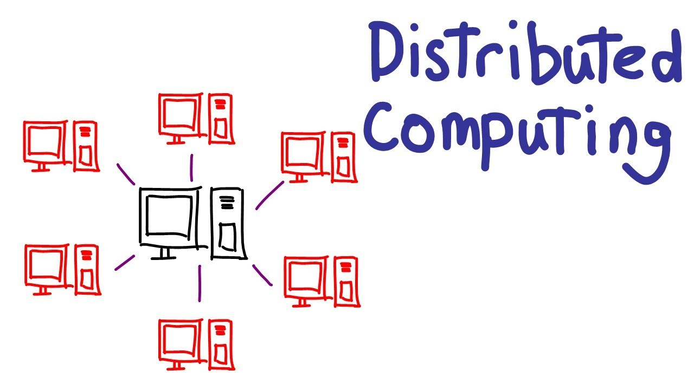
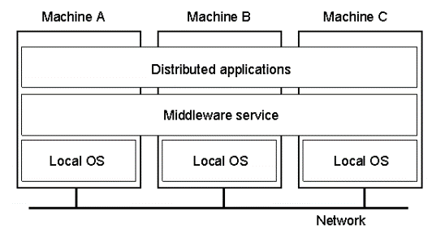
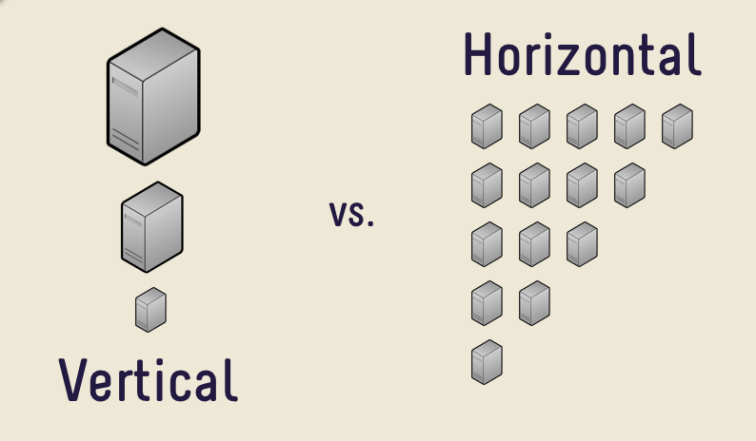
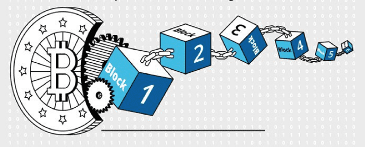
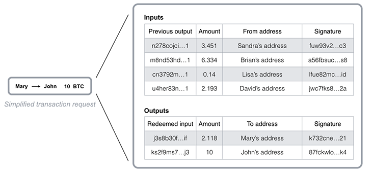
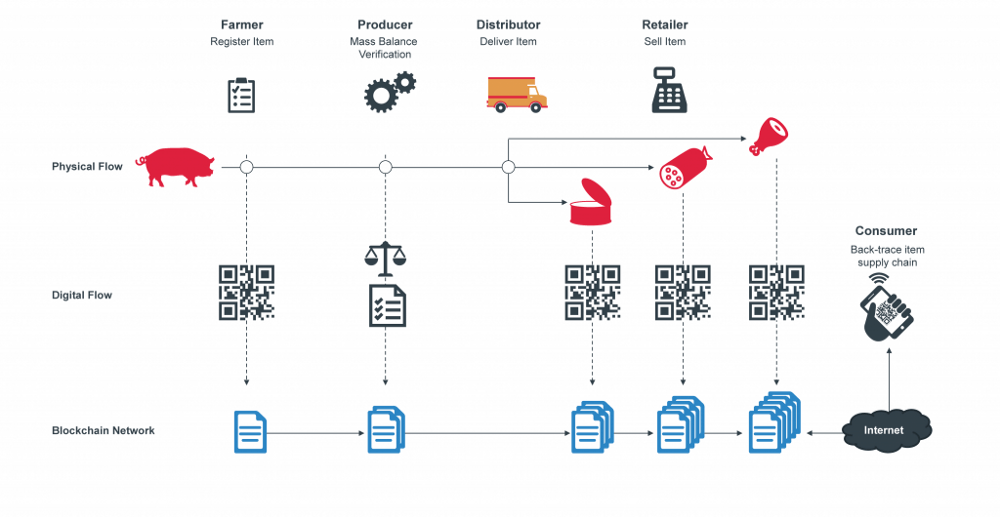
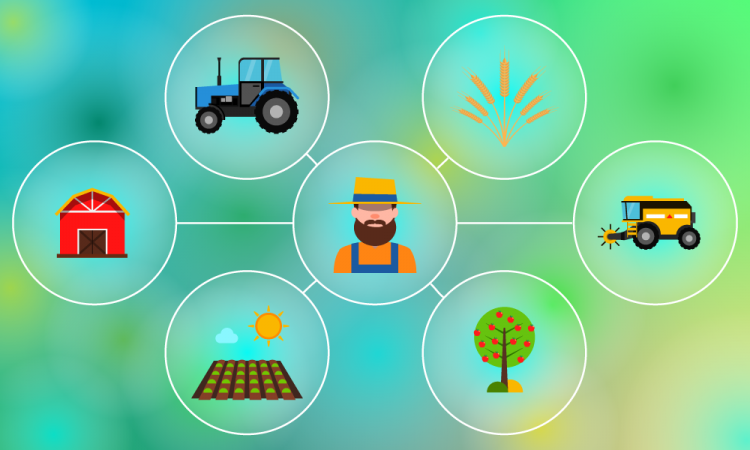
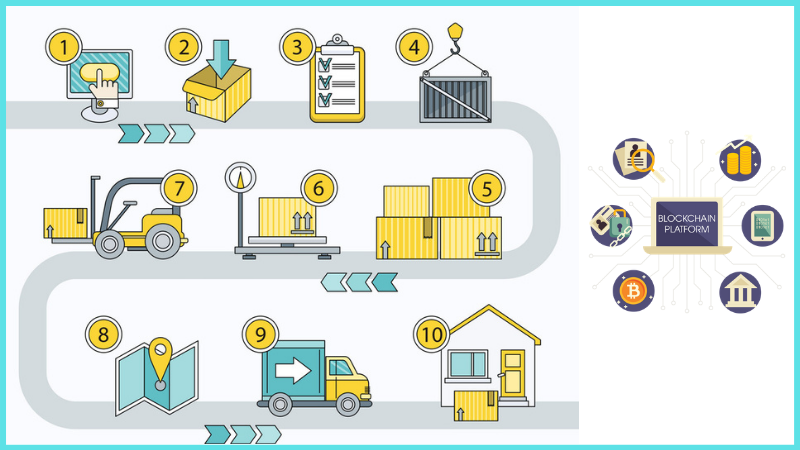
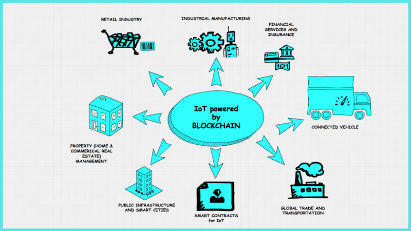
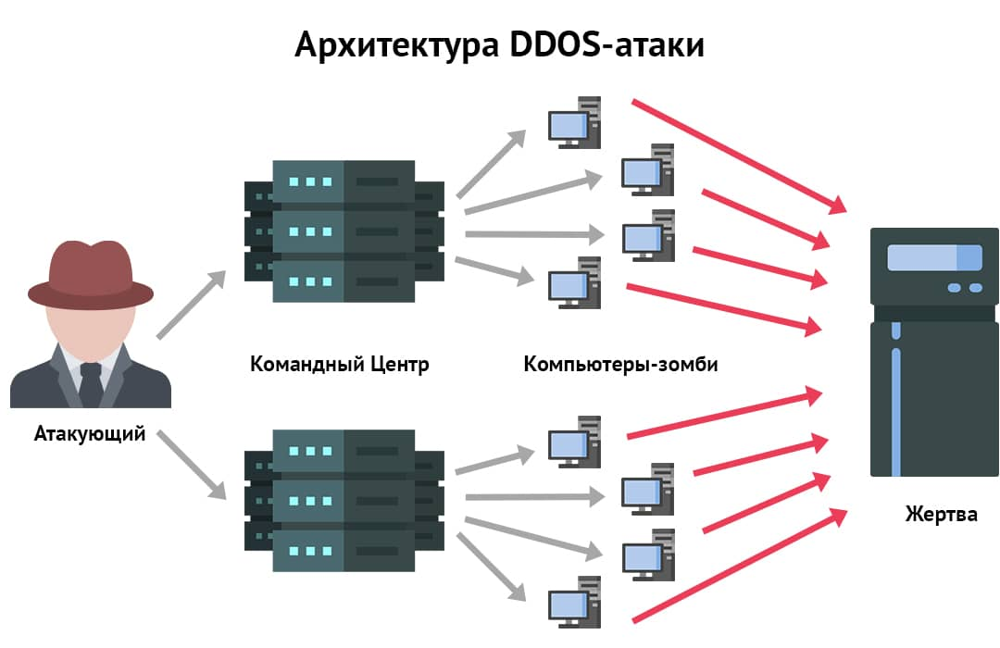

Распределенная система-это приложение, которое выполняет набор протоколов для координации действий нескольких процессов в сети связи, так что все компоненты взаимодействуют друг с другом для выполнения одного или небольшого набора связанных задач. Сотрудничающие компьютеры могут получать доступ к удаленным ресурсам, а также к локальным ресурсам в распределенной системе через сеть связи. Существование нескольких автономных компьютеров прозрачно для пользователя в распределенной системе. Пользователь не знает, что задания выполняются несколькими компьютерами, находящимися в удаленных местах. Это означает, что, как и в централизованных системах, ни один компьютер в системе не несет всей нагрузки на системные ресурсы, которая обычно требуется для запуска компьютерной программы
Распределенные системы создаются поверх существующего программного обеспечения для сетей и операционных систем. Распределенная система включает в себя набор автономных компьютеров, соединенных через компьютерную сеть и промежуточное программное обеспечение для распространения. Чтобы стать автономным, существует четкая связь между двумя компьютерами в сети. Промежуточное программное обеспечение позволяет компьютерам координировать свою деятельность и совместно использовать ресурсы системы, чтобы пользователи воспринимали систему как единое интегрированное вычислительное средство. Таким образом, промежуточное программное обеспечение-это мост, который соединяет распределенные приложения в разных физических местах с разными аппаратными платформами, сетевыми технологиями, операционными системами и языками программирования. Программное обеспечение промежуточного программного обеспечения разрабатывается в соответствии с согласованными стандартами и протоколами. Он предоставляет стандартные услуги, такие как именование, сохранение, управление параллелизмом, чтобы гарантировать получение точных результатов для параллельных процессов и получение результатов как можно быстрее, распределение событий, авторизация для указания прав доступа к ресурсам, безопасность и т.д. Служба промежуточного программного обеспечения распространяется на несколько компьютеров.
Масштабируемость-это возможность масштабирования системы, процесса или сети с увеличением потребности в увеличении рабочей нагрузки с течением времени бизнес-модели.
Бизнес-модели могут масштабироваться по целому ряду причин, таких как увеличение объема хранения данных или рабочих нагрузок процессов/запросов, например, количество посещений или заказов системы электронной коммерции. И требование масштабируемости для удовлетворения этой потребности без ущерба для производительности, в целом масштабируемость реагирует по мере расширения или уменьшения использования с размером системы с течением времени.
Существует два типа масштабирования: горизонтальное масштабирование и вертикальное масштабирование.
Вертикальное масштабирование: это способ расширения существующего сервера путем повышения мощности за счет обновления процессора, оперативной памяти, хранилища и т.д. Вертикальное масштабирование часто ограничивается превышением емкости текущей физической конфигурации. большой или задержка, когда "к сожалению" сервер не работает для обновления или развертывания системы.
Горизонтальное масштабирование: это способ расширения за счет добавления большего количества узлов/серверов в существующую сеть, увеличивая систематическую пропускную способность. Этот метод дешевле и проще в использовании, чем вертикальное масштабирование, особенно его очень легко уменьшить, а также увеличить размер системы.
Примером горизонтального масштабирования являются MongoDB и Cassandra, оба из которых предоставляют встроенные методы масштабирования системы путем добавления дополнительных узлов или удаления узлов без каких-либо задержек (нулевое время простоя). И еще один пример вертикального масштабирования-MySQL, он может легко преобразовать работающий сервер в новый более крупный и сильный сервер, но процесс имеет время простоя.
Надежность можно объяснить простым способом, что это "липкость" системы, которая означает, что система будет продолжать предоставлять свои услуги, как только один или несколько компонентов (программное/аппаратное обеспечение) системы будут повреждены. ошибка. Надежность является ключевым компонентом в любой распределенной системе, поскольку в такой системе любой отказ одного компонента заменяется другим, который исправен, обеспечивая всегда выполнение требуемой задачи.
Примером надежности является сайт электронной коммерции или банковская система вся информация о транзакции пользователя никогда не будет уничтожена из-за сбоя сервера, выполняющего эту транзакцию, каждый отказавший сервер должен быть немедленно заменен копией, содержащей полную информацию об этом сервере.
Для достижения надежности система должна иметь резервную копию каждого компонента системы в режиме реального времени, что также является сложной задачей с точки зрения технической сложности, а также стоимости проекта.
Доступность-это то, как долго система остается в рабочем состоянии в течение определенного периода времени, что является простой мерой процента времени, в течение которого система работает и работает в течение обычного периода времени. Например, если автомобиль может работать в течение нескольких месяцев без технического обслуживания, можно сказать, что автомобиль имеет высокую доступность. Если автомобиль списан для того, чтобы его отвезли в гараж на техническое обслуживание, он считается недоступным в течение этого времени.
Разница между надежностью и доступностью:
Если система надежна, она определенно будет иметь доступность, однако доступность системы не означает, что она надежна. Другими словами, надежность означает, что она имеет высокую доступность, однако доступность может быть достигнута с системой без надежности за счет минимизации времени технического обслуживания и ремонта. Давайте возьмем пример: система электронной коммерции имеет уровень доступности до 99,99% в первые два года ее запуска, но у системы есть потенциальный недостаток безопасности, которого во время тестирования нет. обнаруженный клиент не знал об этом, и они все еще были очень довольны системой, пока в один прекрасный день внезапно не была использована эта потенциальная ошибка, что привело к снижению доступности системы в будущем. более длительное время, чем обычно, пока ошибка не будет немедленно "исправлена".
На самом деле, систему с высокой надежностью практически невозможно достичь на практике, но большинство из нас нацелено только на систему с высокой доступностью.
Производительность распределенной системы зависит от высокой нагрузки и низкой задержки. Это означает, что система, способная выдерживать несколько одновременных запросов с низкой задержкой, является высокопроизводительной системой. Обычно он измеряется количеством запросов, которые он получает и отвечает за определенный период времени, обычно в секундах. Например, эффективная система электронной коммерции способна выдерживать 5000 заказов в секунду или 500000 посетителей одновременно.
Еще одним важным свойством распределенной системы является простота масштабируемости и обслуживания системы, другими словами, скорость системы, когда дело доходит до ремонта или обслуживания, когда это необходимо, чем выше указанное время, тем ниже доступность. Для достижения этой цели система должна иметь возможность легко обнаруживать ошибки или потенциальные сбои, если таковые имеются, быстро понимать первопричину, легко вносить необходимые изменения для их исправления или просто легко расширяться по мере необходимости.
Блокчейн-это технология блокчейна, которая позволяет безопасно передавать данные на основе чрезвычайно сложной системы шифрования, аналогичной бухгалтерской книге компании, где деньги тщательно контролируются. и записывайте все транзакции в одноранговой сети.
Каждый блок содержит информацию о времени создания и связан с предыдущим блоком, а также код времени и данные транзакции. Как только данные будут приняты сетью, изменить их будет невозможно. Блокчейн предназначен для противодействия мошенничеству и изменению данных.
Эффективность технологии блокчейн зависит от следующих трех основных компонентов: децентрализованной сети, распределенного консенсуса и криптографически безопасных алгоритмов. Ключевые особенности каждого из компонентов заключаются в следующем:
Децентрализованная сеть - Функция децентрализованной сети заключается в обеспечении распространения сообщений о транзакциях между узлами, ответственными за ведение распределенной бухгалтерской книги. Сетевой протокол позволяет передавать сообщение о транзакции с любого узла на все узлы децентрализованной сети. Однако сеть не является чистой вещательной средой и позволяет узлам распространять сообщения, представляющие действительные транзакции. Сеть может быть частью частного или публичного блокчейна, что влияет на производительность и безопасность сети. Независимо от того, является ли блокчейн публичным или частным, децентрализованная сеть основана на архитектуре p2p. Узлы могут свободно присоединяться и уходить. Централизованного арбитра не существует. Сеть имеет встроенную избыточность и надежность для уменьшения сбоев узлов и каналов.
Распределенный консенсус - Блокчейн использует протоколы консенсуса по децентрализованной сети p2p для проверки транзакций перед добавлением блоков в публичную книгу. Протокол консенсуса получает сообщения из сети p2p и вставляет транзакции в распределенную книгу. Протокол консенсуса отвечает за майнинг блоков и достижение консенсуса по их интеграции в блокчейн. Протокол консенсуса выбирает набор транзакций, который принимается после прохождения процесса проверки. Процесс проверки определяется пользователями и не требует централизованной проверки. Протоколы консенсуса гарантируют, что вновь добавленные транзакции не противоречат подтвержденным транзакциям в блокчейне и поддерживают правильный хронологический порядок. Вновь добавленные транзакции, ожидающие подтверждения, упаковываются в блок и отправляются в блокчейн-сеть для проверки.
Криптографически безопасный алгоритм - Основополагающим компонентом технологии блокчейн является криптосистема. Современные криптографические системы блокчейнов используют алгоритмы с открытым ключом, такие как криптография с эллиптической кривой, и дайджесты сообщений, такие как SHA3-256. В типичном приложении блокчейна пара ключей эллиптической кривой, содержащая открытый ключ и закрытый ключ, генерируется на основе кривых Secp256K1. Закрытый ключ традиционно используется для хранения в секрете и используется для подписания транзакций. Например, в случае использования биткоина, когда пользователь обменивается биткоинами с другим пользователем, пользователь подписывает транзакцию своим закрытым ключом до объявления в сети. Как только транзакция будет подписана, майнеры в сети будут использовать алгоритмы консенсуса для проверки достоверности подписи транзакции, и проверка будет достигнута.
В производственном процессе нам нужна бухгалтерская книга для мониторинга производственного процесса, запасов, распределения, качества, информации о транзакциях... Блокчейн заменит интеллектуальное устройство, которое предоставляет эффективность прав управления, чтобы значительно повысить производительность процессов управления цепочками поставок.
Для потребителей возможность проверить, является ли информация о продукте подлинной или нет, предотвратит появление на рынке всех поддельных и поддельных продуктов.

Некоторые применения блокчейна в производстве:
• Прослеживаемость продукции, произведенной на всех этапах.
• Отслеживать поставки сырья для промышленного производства.
• Управление запасами, производственный склад.
• Отслеживать график производства, количество купленных и проданных товаров.
В эпоху технологий 4.0 страны по всему миру, а также Россия способствовали внедрению оцифровки информации в процесс управления данными, в том числе в секторе здравоохранения. Блокчейн применяется для управления активами и хранения медицинской информации о пациентах, управления запасами, заказами, платежами за медицинские устройства, а также фармацевтические препараты. Хотя существует множество интеллектуальных устройств для мониторинга этих услуг, существует множество ограничений на конфиденциальность личной информации пациентов. Поэтому блокчейн является предпочтительным вариантом.
Некоторые применения блокчейна в области здравоохранения:
• Разработка приложений включает мониторинг заболеваний и управление ими (например, интеллектуальные лекарства, носимые устройства, которые могут измерять показатели здоровья и давать обратную связь), а также повышение качества управления.
• Управление цепочками поставок лекарств и медицинского оборудования: отслеживание ввода, происхождения и срока годности медицинских принадлежностей.
• Повышение прозрачности и автоматизации операций по медицинскому обследованию и лечению; происхождение клинических тестов; владение данными о состоянии здоровья пациентов.
При применении блокчейна в образовании информация, хранящаяся в блокчейне, представляет собой не только данные стенограммы, но и процесс обучения, практический опыт и историю найма каждого человека. Избегайте случаев, когда кандидаты обманывают в процессе подачи заявок на стипендии, повышение по службе и т.д.; лгут о своем образовании, опыте работы и дисциплине.
Мало того, что с помощью функции смарт-контракта блокчейн также позволяет автоматически выполнять условия правил обучения, обрабатывать нарушения правил, улучшать ограничения в учебном процессе, если студенты дают обратную связь.
Некоторые применения блокчейна в сфере образования:
• Отслеживать и хранить стенограммы и дипломы студентов, а также информацию о учебных заведениях.
• Подумайте, подходит ли этот человек/кандидат для преподавательской работы, а затем примите решение пригласить этого человека на работу.
• Система управления уровнем, которая оценивает достоверность научных исследований.
• Запись защищенной базы данных академических данных и оценок для систем онлайн-обучения, которые оценивают способности человека на основе требований к поступлению.
Продовольственные цепочки должны стать более устойчивыми, чтобы повысить доверие и лояльность потребителей, и ключом к повышению доверия является эффективная прослеживаемость. Распределенная система учета поможет розничным торговцам и потребителям хранить информацию о транзакциях и повысить прозрачность информации на протяжении всего потока продукта от производственного объекта до объекта обработки. дистрибьюторы, супермаркеты, розничные торговцы и, в конечном счете, потребители.
Данные, связанные с управлением качеством, управлением ценами, финансовым управлением, управлением продажами, могут постоянно обновляться в цепочке блокчейна.

Некоторые применения блокчейна в области сельского хозяйства:
• Управление цепочкой поставок продукции, цепочкой распределения запасов.
• Храните информацию о товарах, процедурах ухода, стандартах для чистых продуктов питания.
• Прослеживаемость, жизненный цикл производства сельскохозяйственной продукции.
Учитывая специфику банковской и финансовой индустрии, легко иметь централизованное государство власти, нарушающее данные пользователей и безопасность, поэтому с помощью современной технологии блокчейн эти проблемы будут решены. Благодаря функции смарт-контрактов можно обойти посредников, сэкономить затраты, ускорить транзакции, ограничить финансовые риски в процессе оплаты и улучшить системы управления информацией. старые технологии.
Некоторые применения блокчейна в области финансов и банковского дела:
• Проверка информации о клиентах, кредитоспособности: позволяет совершать транзакции даже без посредников по проверке.
• Сеть проверяет и сопоставляет одноранговые транзакции, это делается постоянно, чтобы книга всегда была в актуальном состоянии.
• Управление рисками, ограничение рисков при оплате из-за технических проблем, неисполнение обязательств перед оплатой транзакций.
• Интеллектуальная система управления: блокчейн обеспечивает непрерывные инновации, итерации и улучшения, основанные на консенсусе в сети.
Некоторые применения блокчейна в розничной торговле:
• Отслеживание произведенных изделий с помощью каждого идентификатора, хранящегося в блокчейн-системе.
• Смарт-контракт: когда происходит обмен товарами между производителем и транспортной компанией, оба соглашаются, что товар имеет гарантию качества
• Управление информацией о товарах, временем транспортировки, хранением, запасами.
• Смарт-контракты на блокчейне содержат соглашения между этими субъектами об управлении денежным потоком транзакций или о возмещении убытков по мере необходимости.
По мнению многих экспертов, нынешний рынок розничной торговли постепенно переходит на онлайн-торговлю, особенно с развитием платформ электронной коммерции. Это поднимает вопросы безопасности, управления цепочками поставок, процесса транспортировки товаров потребителям, затрат от традиционных способов, которые создают множество барьеров между потребителями и производителями.
Блокчейн решает эту проблему с помощью смарт-контрактов, облегчая подписание сторонами, связываясь с многонациональными компаниями с экономией затрат благодаря устранению посредников, также предоставляются платежные решения. монтируется непосредственно на веб-сайтах, платформах электронной коммерции.
Некоторые применения блокчейна в области электронной коммерции:
• Управление информацией о данных клиентов.
• Отслеживание информации, статуса продукта через серийный номер, QR.
• Создайте платежную систему и принимайте электронные кошельки, постоянных клиентов, подарочные карты, благодарность клиентов....
• Операции и управление цепочками поставок.
Информация о клиентах преобразуется из многих систем, начиная с выбора агента, бронирования автобусных билетов, бронирования отелей и заканчивая достопримечательностями, что требует высокой стабильности и безопасности. Кроме того, трансакционные издержки также являются фактором, который следует учитывать в процессе эксплуатации этой бездымной индустрии услуг. Блокчейн участвует в решении вышеперечисленных проблем, заменяя традиционную систему управления множеством проблем и ошибок.
Некоторые применения блокчейна в сфере туризма:
• Отслеживание багажа, бронирование гостиниц, авиабилетов.
• Идентификационная услуга: Экономьте время на процесс регистрации в аэропортах, отелях, туристических достопримечательностях.
• Разнообразные платежи: Позволяет осуществлять платежи из многих глобальных банков, электронных кошельков, электронных денег...
• Информация о постоянных клиентах, VIP-клиентах…
Развертывая блокчейн-решения в облаке, он поможет поставщикам услуг связи оптимизировать существующие процессы, одновременно повышая безопасность сети, анализируя весь операционный процесс, такие процессы, как роуминг и управление идентификацией в своей бизнес-модели. Оттуда улучшайте и развивайте более качественные услуги.
Некоторые применения блокчейна в области связи и телекоммуникаций:
• Предотвращение мошенничества в роуминге: соглашения о роуминге между операторами станут прозрачными, назначенные узлы могут выступать в качестве валидаторов (майнеров) для проверки каждой транзакции, транслируемой в сети.
• Управление идентификацией и аутентификацией: клиентам потребуется только виртуальный идентификатор для аутентификации, что приведет к гораздо более высокому уровню удовлетворенности.
• Переход на 5G: правила и соглашения между различными сетями будут принимать форму самоисполняющихся смарт-контрактов, которые могут подключать устройства к ближайшему поставщику услуг и оценивать их совместимость. плата за подключение и обслуживание.
• Интернет вещей (IoT): создание более безопасной среды для передачи данных путем создания высокозащищенных одноранговых самоуправляемых сетей.
В течение срока службы продукта, по мере прохождения этапов цепочки поставок, данные, генерируемые на каждом этапе, могут быть записаны в виде транзакций, тем самым создавая постоянную историю продукта. . Блокчейн обеспечивает среду для легкого управления этим огромным хранилищем данных. Технология блокчейн помогает повысить эффективность регистрации и отслеживания заказов, квитанций, счетов-фактур, документов и особенно происхождения продукции.
Благодаря своей децентрализованной природе блокчейн может помочь повысить эффективность обмена информацией о производстве, транспортировке, хранении и амортизации продуктов с заинтересованными сторонами. Решайте проблемы в логистике, такие как задержка доставки, потеря документов, документов, документов, неясное происхождение продукта и другие ошибки в процессе передачи между участниками. цепочка логистических операций...

Некоторые применения блокчейна в области транспорта и логистики:
• Прослеживаемость, аутентификация прозрачных и понятных документов.
• Смарт-пакет (Smart package).
• Смарт-пакет (Smart package).
• Сокращение посреднических расходов, экономия затрат за счет применения смарт-контрактов.
Блокчейн помогает избежать путаницы или пропусков записей и документов и обеспечивает прозрачность всей цепочки обработки записей, автоматизируя некоторые государственные услуги. Особенно городское управление и администрация. Например, датчики, которые предоставляют информацию о состоянии подъема уровня воды во время приливов, служат основой для системы управления движением, которая автоматически регулирует транспортный поток, чтобы избежать локальных заторов.

Некоторые приложения блокчейна в области умных городов (IoT):
• Выписка документов, нотариальное заверение в электронном виде, переоформление документов (брак, регистрация,...) для людей и предприятий.
• Управление информацией о временном и постоянном проживании.
• Ведение земельного учета, градостроительство.
• Автоматизация государственных услуг.
Блокчейн действительно обладает потенциалом для решения проблем кибербезопасности в распределенных системах. Однако блокчейн нельзя считать панацеей от всех проблем кибербезопасности. Блокчейн действительно обладает неотъемлемыми возможностями для устранения нарушений целостности. Однако обеспечение конфиденциальности, доступности и подлинности не гарантируется блокчейном и потребует интеграции с несколькими решениями безопасности. Организации, которые рассматривают блокчейн для решения проблем кибербезопасности, должны тщательно оценить, подходит ли эта технология. В частности, приведенный ниже план является хорошим началом для определения того, нуждается ли организация в блокчейне для замены существующего решения.
Как только потребность в распределенном блокчейне будет обоснована, следующие шаги заключаются в том, чтобы определить блокчейн-решение, которое хорошо подходит для организации. Существует несколько аспектов, которые необходимо учитывать, таких как тип данных, закодированных в транзакциях блокчейна, частота транзакций, инфраструктура, используемая для хранения блокчейна (общедоступная или разрешенная), система управления ключами, количество валидаторов, время начальной загрузки, способность смарт-контрактов динамически изучать правила, поверхности атак в решении блокчейна и т.д. Например, для сектора здравоохранения тип данных, хранящихся в блокчейне, должен быть тщательно идентифицирован, поскольку любая конфиденциальная информация может быть подвергнута атакам на конфиденциальность. Любая организация, которая хотела бы обеспечить соответствие деятельности участников блокчейна требованиям, предпочла бы разрешенный блокчейн.
Ниже приводится краткое изложение ключевых исследовательских задач, которые необходимо решить для реализации практического решения блокчейна:
Еще одним недостатком блокчейн-систем является то, что после добавления данных в блокчейн их очень трудно изменить. Хотя стабильность является одним из преимуществ блокчейна, она не всегда хороша. Изменение данных или кода блокчейна обычно очень требовательно и часто требует жесткого форка, когда одна цепочка отбрасывается, а новая берется.
Блокчейн использует криптографию с открытым ключом (или асимметричную), чтобы предоставить пользователям право собственности на свои криптовалютные единицы (или любые другие данные блокчейна). Каждый адрес блокчейна имеет соответствующий закрытый ключ. Хотя адрес может быть общим, закрытый ключ должен храниться в секрете. Пользователям нужен их закрытый ключ для доступа к своим средствам, что означает, что они действуют как свой собственный банк. Если пользователь теряет свой закрытый ключ, деньги фактически теряются, и они ничего не могут с этим поделать.
Блокчейны, особенно те, которые используют доказательство работы, крайне неэффективны. Поскольку майнинг является высококонкурентным, и каждые десять минут есть только один победитель, работа каждого другого майнера тратится впустую. Поскольку майнеры постоянно пытаются увеличить свою вычислительную мощность, чтобы у них было больше шансов найти действительный хэш блока, ресурсы, используемые сетью биткойнов, значительно возросли за последние несколько лет, и в настоящее время она потребляет больше энергии, чем многие страны, такие как Дания, Ирландия и Нигерия.
Блокчейн-бухгалтерские книги со временем могут стать очень большими. Блокчейн Биткойна в настоящее время требует около 200 ГБ памяти. Текущий рост размера блокчейна, по-видимому, опережает рост жестких дисков, и сеть рискует потерять узлы, если книга станет слишком большой для загрузки и хранения отдельными лицами.
Алгоритм консенсуса Proof of Work, который защищает блокчейн Биткойна, доказал свою эффективность на протяжении многих лет. Тем не менее, существует несколько потенциальных атак, которые могут быть осуществлены против блокчейн-сетей, и 51% атак являются одними из наиболее обсуждаемых. Такая атака может произойти, если одному субъекту удастся контролировать более 50% мощности хэширования сети, что в конечном итоге позволит им нарушить работу сети, намеренно исключив или изменив порядок транзакций.
Отличительная особенность блокчейна определяет, что транзакции глобально известны всем узлам прозрачно. Хотя каждый узел может свободно создавать псевдонимные адреса, несколько исследований доказали, что блокчейн обеспечивает более слабую анонимность, чем ожидание. Предыдущее исследование показало, что, анализируя график полной транзакции биткойна, иногда можно было связать реальные личности контрагента, что приводило к потенциальному риску разоблачения всех транзакций. Кроме того, обилие информации, отображаемой в графе транзакций, оставляет больше уязвимостей для злоумышленников. К сожалению, ни одна отдельная мера не может обеспечить надежную конфиденциальность транзакций, поскольку каждый метод решает только определенный аспект проблемы
Существующая атака на уровень данных раскрывает угрозы безопасности криптографических алгоритмов и управления ключами. В этом разделе мы обсудим мощную квантовую атаку и уязвимости традиционной инфраструктуры открытых ключей.
В настоящее время обеспечение безопасности криптографического алгоритма, принятого в блокчейне, зависит от вычислительной сложности задачи дискретного логарифма эллиптической кривой или задачи факторизации больших целых чисел. Однако с быстрым развитием квантовых алгоритмов его мощная способность к параллельным вычислениям обеспечивает возможность атаки на основе алгоритма Гровера и Шора. С помощью квантового компьютера алгоритм Гровера ускоряет генерацию хэшей, а алгоритм Шора облегчает поиск дискретных логарифмов и факторинг целых чисел, тем самым создавая угрозы как для криптографии с открытым ключом, так и для хэш-функций. Например, из-за однонаправленного свойства алгоритма цифровой подписи эллиптической кривой (ECDSA) закрытый ключ может генерировать открытый ключ, в то время как обратное неверно. Если алгоритм Шора используется для взлома криптографического алгоритма, злоумышленник может сгенерировать архитектуру блокчейна на основе угроз безопасности мультимедийных инструментов и приложений закрытый ключ из открытого ключа и реализовать подделку цифровой подписи, тем самым похитив собственность и вторгнувшись в частную жизнь пользователей.
Одноранговая сеть обеспечивает благоприятную среду для злоумышленников для запуска атак из-за широко распределенных узлов. В условиях атаки производительность сети серьезно снижается, что приводит к снижению эффективности распространения информации о маршрутизации. Поэтому наличие защитных атак весьма важно.
Стремясь увеличить вероятность победы в острой конкуренции, майнеры могут инвестировать в более вычислительный источник, что, возможно, вызовет DDoS-атаку. Широко признано, что DDoS-атака привела к беспрецедентному разрушению сети, особенно одноранговой сети. Несколько эмпирических исследований пришли к выводу, что DDoS-атака, нацеленная на майнинг-пул, стала второй по частоте атакуемой целью после валютных бирж.
Эгоистичный майнинг-это несправедливая стратегия в системах, основанных на военнопленных. Чтобы получить больше прибыли, будет запущена атака на эгоистичный майнинг, которая является несправедливым методом для нечестных майнеров для увеличения доходов. Эгоистичный майнер скрывает недавно добытые блоки от других майнеров, вызывая частную вилку, в которой количество блоков может превышать публичное. Злонамеренный майнер генерирует частную цепочку под своим контролем с более высокой скоростью генерации, чем публичная цепочка, добытая честными майнерами. В этом случае, как только эгоистичный майнер выпустит частные блоки для общественности из-за своего предела вычислительной мощности, он получит больше биткоинов. В результате честные майнеры будут тратить много ресурсов на решение недействительных головоломок, мультимедийных инструментов и приложений, в то время как эгоистичные майнеры будут получать больше прибыли с риском больших потерь.
Среди решений для защиты от квантовой атаки сочетание блокчейна с постквантовой криптографией стало выдающимся направлением исследований. В частности, из-за неразрешимости решетчатой задачи, такой как недетерминированная полиномиально-жесткая (NP-жесткая), криптография на основе решетки может быть использована для эффективной защиты от квантовых атак. Инь и др. представили схему сигнатур на основе решетки, которая реализует легкие недетерминированные кошельки путем расширения решетчатых пространств в квантовой среде. Сан и др. разработал квантово-защищенную структуру под названием Login contract (LC), которая лучше защищает от квантовой атаки благодаря масштабируемому консенсусному протоколу, а также схеме цифровой подписи на основе квантового распределения ключей (QKD). Кроме того, Гао и др. также предложен метод сигнатур на основе решетки, основанный на постквантовом блокчейне (PQB), безопасность которого зависит от задачи решетчатого короткого целочисленного решения (SIS). По сравнению с другими схемами вычислительная сложность значительно повышается за счет сокращения размера ключей и подписи
Контрмеры в недавних исследованиях были сосредоточены на сотрудничестве между несколькими доменами для смягчения DDoS-атак. Кроме того, также требуется обнаружение DDoS - атаки. Ченг и др. предложили метод обнаружения DDoS-атак для обнаружения аномальных сетевых потоков с высокой частотой обнаружения и низкой частотой ложных тревог. Ян и др. введена стратегия штрафных санкций за кредитные бонусы (CBPS) для обеспечения доверительной среды в IoT, которая может эффективно защищать от DDoS-атак. Благодаря возможности разделения плоскостей управления и данных программно-определяемые сети (SDN) привлекли большое внимание к развертыванию в сетевом управлении, что обеспечивает новый метод противодействия DDoS-атакам.
Нежелание предоставлять информацию о конфиденциальности также является проблемой, которую еще предстоит решить. Было проведено исследование о том, как установить доверительный союз между смежными и непересекающимися сетевыми доменами, т. е. автономными системами, что смягчает DDoS-атаку, выбирая сотрудников в соответствии с рангом кредитного рейтинга.